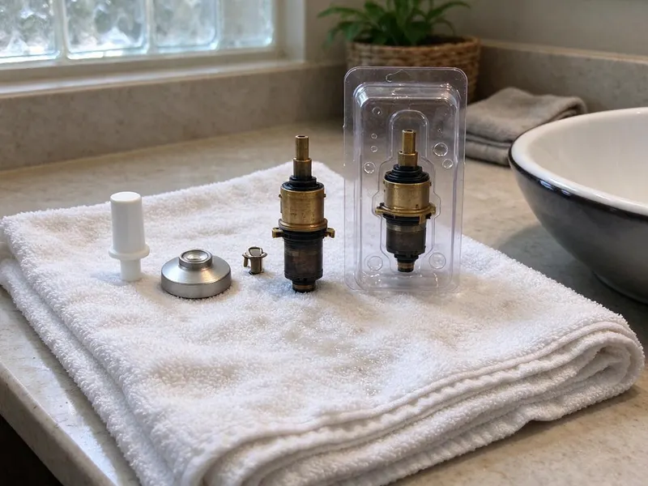

Toilet Repair in Cedar Hill, TX
When your toilet acts up in Cedar Hill, TX, you need a fix that lasts. DFJ Plumbing provides dependable toilet repair to keep your bathroom running smoothly.
- Fast, Local Service
- Licensed Plumbers
- Upfront Pricing
- Guaranteed Repairs
Need Toilet Repair Right Now in Cedar Hill, TX?
Our skilled plumbers are ready to tackle any toilet problem, restoring comfort and function to your home.
Expert Toilet Repair Services Across Cedar Hill, TX
When you're dealing with a problematic toilet in Cedar Hill, TX, DFJ Plumbing is here to help. We understand the urgency of toilet repairs and provide efficient, lasting solutions for homeowners throughout the area.
Our expertise includes:
- Diagnose and fix all toilet leaks.
- Clear stubborn toilet clogs quickly.
- Repair or replace faulty toilet components.

Additional Bathroom Plumbing Services in Cedar Hill, TX
From toilets to showers, our bathroom plumbing team in Cedar Hill, TX repairs, installs, and replaces every fixture with clean, code-compliant work.


Customers
Why Choose DFJ Plumbing for Toilet Repair in Cedar Hill, TX?
A malfunctioning toilet is more than an inconvenience, it can waste water and cause damage if not addressed. We use durable parts that stand up to Texas water conditions.
- Local Expertise, Our team understands the specific plumbing challenges faced by homes in Cedar Hill, TX.
- Fast Response, We prioritize urgent toilet repairs to minimize disruption to your daily life.
- Transparent Pricing, You'll always receive a clear, upfront estimate before any work begins.
Citywide Coverage
DFJ Plumbing proudly serves every neighborhood in Cedar Hill for your toilet repair needs. Whether you're in the heart of downtown or the surrounding suburbs, our plumbers are local and ready to respond.
Experienced Team
The DFJ Plumbing team is comprised of highly skilled plumbers who regularly perform toilet repairs. Their deep knowledge ensures that your toilet issues are diagnosed accurately and fixed correctly the first time.
Safety-First Approach
All toilet repairs performed by DFJ Plumbing adhere strictly to local plumbing codes and safety standards in Cedar Hill, TX. We ensure proper water shut-off procedures and secure connections to prevent leaks.
Trusted Certified Cedar Hill Plumbing Services Professionals
At DFJ Plumbing, we take pride in providing licensed, certified plumbing services throughout Cedar Hill, TX. Backed by recognized industry credentials, our experienced plumbers combine technical skill with genuine customer care. Whether it is repair, installation, or maintenance, we follow strict safety and quality standards to deliver long-lasting results you can trust.
Call Us Now PHCC Plumbing Contractor Recognition
PHCC Plumbing Contractor Recognition Better Business Bureau (BBB) Accreditation
Better Business Bureau (BBB) Accreditation Angi Certified Pro
Angi Certified Pro ISO 9001 Quality Management Certification
ISO 9001 Quality Management CertificationReliable Toilet Repair Services in Cedar Hill, TX
Running Toilet Repair in Cedar Hill
A running toilet is not just annoying, it can waste hundreds of gallons of water a day, leading to significantly higher water bills. This common issue is often caused by a faulty flapper, a misaligned fill valve, or an improperly adjusted float. Our plumbers quickly identify the exact cause, whether it's mineral buildup from Texas's hard water affecting the flapper seal or a worn-out component, and replace the necessary parts to stop the continuous flow and restore efficiency.

Clogged Toilet Clearing in Cedar Hill, TX
Stubborn toilet clogs are a frequent problem that can bring your bathroom to a halt. While some can be cleared with a plunger, deeper blockages may indicate issues further down the drain line or even in the main sewer line. Our technicians use professional-grade augers and sometimes even camera inspections to pinpoint and remove obstructions effectively. We handle everything from foreign objects to excessive toilet paper, ensuring your toilet drains freely again.
Leaking Toilet Repair in Cedar Hill
Toilet leaks can cause significant water damage to your bathroom floor, subfloor, and even the ceiling below. Leaks can originate from the base of the toilet, the tank, or the supply line. Common culprits include a worn-out wax ring, loose bolts, or cracked porcelain. We thoroughly inspect all potential leak points, replacing seals, tightening connections, or recommending bowl replacement if the porcelain is damaged, preventing further water intrusion.
Toilet Flush Mechanism Repair in Cedar Hill, TX
If your toilet isn't flushing properly, it could be due to issues with the flush chain, handle, flapper, or fill valve. A weak flush might mean the tank isn't filling correctly, while a loose handle might not be engaging the flapper. Our plumbers are adept at diagnosing these internal tank problems, replacing worn or broken components like flush valves, fill valves, and toilet handles to restore full and effective flushing power.
Toilet Brands We Service in Cedar Hill
DFJ Plumbing provides repair services for all major toilet brands commonly found in Cedar Hill homes. This includes popular manufacturers such as American Standard, Kohler, Toto, Delta, and Gerber. Our technicians carry a wide range of universal and brand-specific replacement parts, ensuring that we can fix almost any toilet model, regardless of its age or brand, quickly and efficiently. You can trust us with your specific toilet unit.
Emergency Toilet Repair in Cedar Hill, TX
A severely clogged or overflowing toilet can be an emergency, especially in a one-bathroom home or a busy commercial setting. When you have a toilet crisis in Cedar Hill, TX, DFJ Plumbing offers rapid response emergency services to prevent water damage and restore functionality. We're equipped to handle urgent issues like severe clogs, burst supply lines, or toilets that won't stop running, providing immediate relief and lasting repairs.
Commercial Toilet Repair in Cedar Hill
Commercial toilets often endure heavier use and require specialized parts and expertise for repair. DFJ Plumbing offers comprehensive toilet repair services for businesses and commercial properties throughout Cedar Hill. We understand the importance of minimizing downtime for your restrooms and provide efficient, durable repairs for flushometer toilets, low-flow models, and standard commercial units, ensuring your business operations run smoothly.

Toilet Gasket and Seal Replacement in Cedar Hill, TX
The gaskets and seals within your toilet tank and at its base are crucial for preventing leaks. Over time, these rubber components can degrade, crack, or become brittle due to age and exposure to water, especially with Texas's varying water hardness. We specialize in replacing worn-out flapper seals, tank-to-bowl gaskets, and the wax ring at the toilet's base, which is essential for preventing leaks onto your bathroom floor and maintaining a watertight seal.
Toilet Repair Near Me in Cedar Hill, TX
When you search for 'toilet repair near me' in Cedar Hill, TX, you want a local, reliable plumber who can arrive quickly. DFJ Plumbing is your community's trusted plumbing service, with technicians strategically located to provide fast response times.
Our commitment to the Cedar Hill community means we're always close by, ready to address your toilet repair needs efficiently. We pride ourselves on being the go-to local experts for all plumbing issues, delivering quality service right to your doorstep.
DFJ Plumbing at a Glance
- Licensed and insured plumbers serving Cedar Hill, TX
- Same-day appointments and 24/7 emergency response
- Clear written estimates, no hidden fees
- 4.9-star rated by 812+ Texas customers
Cedar Hill Map
Cedar Hill Information
- Population
- 48,411
- Area codes
- 972/469/214
- Service area
- Cedar Hill and communities within 40 miles
- Nearby
- DeSoto, Grand Prairie, Mansfield, Arlington
Given the expansive clay soils and varying water hardness in Texas, toilets in Cedar Hill homes can be prone to issues like wax ring failures or mineral buildup affecting internal components, making timely and effective repair crucial.
Expert Services
Trust our professionals for reliable DFJ Plumbing solutions in Cedar Hill, TX.
Our Specialized Plumbing Services in Cedar Hill, TX
At DFJ Plumbing, we provide a complete range of plumbing services across Cedar Hill, TX. From leak detection to full system installations, our team ensures fast, precise, and affordable service for both residential and commercial properties. Explore our core services below:


How Our Toilet Repair Process Works in Cedar Hill, TX
Our toilet repair process is designed for efficiency and transparency, getting your bathroom back in order with minimal fuss.
Request a Quote
Call (737) 405-5978 or fill out our online form to schedule your toilet repair service. We'll gather initial details about your issue and arrange a convenient appointment time.
Expert Diagnosis
Our skilled plumber arrives on time, performs a thorough inspection of your toilet, and accurately diagnoses the problem. We use specialized tools to pinpoint leaks or blockages.
Clear Estimate
Before any work begins, you'll receive a detailed, upfront estimate for the repair. We explain the recommended solution and answer all your questions.
Frequently Asked Questions About Toilet Repair in Cedar Hill
The cost of toilet repair in Cedar Hill, TX can vary widely depending on the issue. Minor repairs like replacing a flapper might range from $100 to $250, while more complex issues such as a new fill valve or wax ring replacement could be $200 to $400. Severe clogs requiring professional augering might fall in the $150 to $350 range. We provide a detailed estimate after diagnosing the problem.
Yes, even small, consistent toilet leaks can cause significant damage over time. Water can rot wood subflooring, degrade grout, warp tiles, and encourage mold growth. If left unaddressed, a leaking toilet can lead to expensive structural repairs and health hazards.
Most standard toilet repairs, such as replacing a flapper, fill valve, or wax ring, can be completed within one to two hours by an experienced plumber. More complex issues like clearing a deep clog or diagnosing intermittent problems might take a bit longer, but we strive for efficiency.
Yes, DFJ Plumbing stands behind the quality of our work. We offer a warranty on both the parts we install and the labor performed during your toilet repair. The specific warranty details will be provided at the time of service, ensuring your peace of mind.
We service all major toilet brands, including but not limited to American Standard, Kohler, Toto, Delta, Gerber, and Mansfield. Our plumbers are equipped with a wide range of common replacement parts and have experience with various models and flush systems.
Common signs include a toilet that runs constantly, a weak or incomplete flush, water leaking around the base, a rocking or unstable bowl, or a visible crack in the porcelain. Any unusual noises, like gurgling or whistling, can also indicate an internal issue that needs attention.
Repeated toilet clogs can be caused by a variety of factors. These include flushing non-biodegradable items, excessive use of toilet paper, a low-flow toilet design that struggles with waste volume, or more serious issues like a partially blocked drain line, tree root intrusion in the sewer line, or even a damaged or improperly vented main stack.
Generally, basic toilet repairs like replacing internal tank components, fixing a leak, or clearing a clog do not require a permit in Cedar Hill, TX. However, if the repair involves altering the drain line, relocating the toilet, or making significant changes to the plumbing system, a permit might be necessary. We can advise you on permit requirements for your specific situation.
What People Are Saying About Our Plumbing Experts?

Robert G.
The trenchless sewer replacement saved our front yard. They walked us through the camera inspection footage first so we knew exactly what we were paying for.
Sewer Line Replacement · Cedar Hill, TX
Patricia H.
We had a slab leak that two other companies could not find. DFJ Plumbing located it in under an hour, explained our options, and the price matched the quote to the dollar.
Slab Leak Repair · Mansfield, TX
Mark T.
When our office needed drain cleaning, DFJ Plumbing provided quick, reliable service. The plumber arrived on time and made sure every drain flowed perfectly before leaving. Very satisfied.
Drain Cleaning · Grand Prairie, TX
Emily R.
I called DFJ Plumbing for plumbing repair, and the technician was fast, polite, and thorough. They explained the problem clearly and fixed it the same day. I will definitely hire them again. Highly recommended!
Plumbing Repair · Irving, TX
Sofia M.
Two new toilets installed in one visit, no mess left behind, and the tech even adjusted a faucet he noticed was dripping. Fair pricing and really friendly.
Toilet Installation · Arlington, TXLaura S.
I scheduled a water heater replacement, and the team made the process smooth and affordable. The new unit works perfectly, and they cleaned up after completing the job.
Water Heater Replacement · Grand Prairie, TX